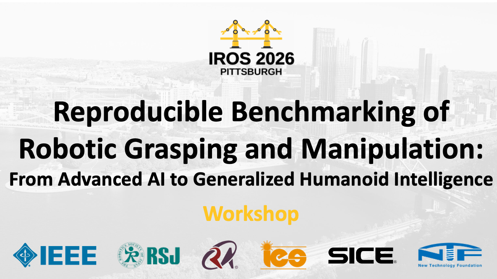

Reproducible Benchmarking of Robotic Grasping and Manipulation - IROS 2026
27 September, Pittsburgh, PA, USA
Andrea Cavallaro, Changjae Oh, and Alessio Xompero are co-organisers of the
international workshop that will be held during the
2026 IEEE/RAS International Conference on Intelligent Robots and Systems (IROS).